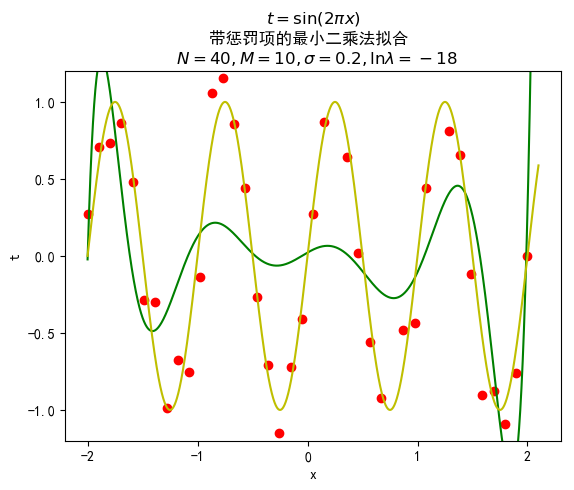
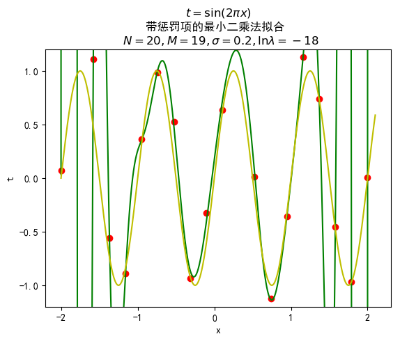
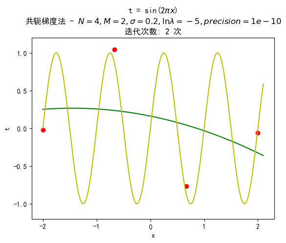

李一鸣
2018 年 9 月 25 日
网址：https://upupming.site/Lab1-polynomial-curve-fitting/README.html
源代码：https://github.com/upupming/Lab1-polynomial-curve-fitting
| 班号 | 学号 | 姓名 |
|---|---|---|
| 1603103 | 1160300625 | 李一鸣 |
本文格式参考了 [Bishop 2006]，若不加特殊说明，定义向量时均是列向量。
| 数据类型 | 格式规范 | MathJax 写法 | 实际效果 |
|---|---|---|---|
| 向量 | 小写加粗罗马字母 | \mathrm{\mathbf{w}} |
|
| 转置 | 右上标 T | (w_0, w_1, ..., w_M)^T |
|
| 随机变量分布类型 | 书法字母 (calligraphic letters) | \mathcal{N} |
|
| 矩阵 | 大写加粗罗马字母 | \mathrm{\mathbf{X}} |
Matplotlib
Python 2D 绘图库
NumPy
矩阵运算
本次实验的目标是对正弦函数曲线 进行拟合。简单来讲，就是根据已有数据集 找到一条曲线，使其能够最好地预测真实情况下给定
向量、矩阵均采用数据结构均是 Numpy 中提供的数组结构。
编写一个函数，根据用户传入的函数生成指定数量的数据，利用 Numpy 库提供的 numpy.random.normal 加入以 0 为均值、用户指定方差的噪声。以字典 {'xArray': array, 'tArray': array} 的形式返回给用户。
最小二乘法通过最小化误差的平方和寻找数据的最佳函数匹配。
我们使用下面的多项式函数来拟合数据:
其中
显然
其中
为了求得最优的解析解，我们需要最小化
误差函数中的 是利用高斯分布进行最大似然估计得来的。假定在
由于每个数据都是独立同分布的，根据乘法公式，对于训练数据集 和 则有：
这就是似然函数，即在 已知的条件下，给定 利用拟合曲线得到的估计值正好是 的概率。我们的任务就是最大化似然函数，由于⼤量⼩概率的乘积很容易下溢，于是我们转而计算概率的对数和：
现假设系数向量 取 时似然函数达到最大值。为了求解 ，可以忽略后两项，同时将第一项中的 替换为 也不会影响计算结果。也就是要最大化：
这等价于最小化误差函数 (3)。
下面对 (3) 做一些变形：
令
则
接下来我们需要求导，在下面的计算过程中要十分注意矩阵求导是该采用分子布局还是分母布局，下面引用一段 [Matrix calculus | Wikipedia] 中的原话：
- If we choose numerator layout for , we should lay out the gradient as a row vector, and as a column vector.
- If we choose denominator layout for , we should lay out the gradient as a column vector, and as a row vector.
- In the third possibility above, we write and , and use numerator layout.
我们在接下来的计算中选择第 1 种规约 (Consistent numerator layout)， 以 布局， 以 布局，那么就有
对 求导，得：
令导数为
总结：对于已知训练数据集 ，规定一个多项式次数
然而，当多项式次数
下面讨论加入惩罚项的最小二乘法。
修正误差函数，在 (3) 式的基础上加入正则项：
其中 调节正则项、平方和两者之间的比例。
将其对 ：
这里同样需要用到 [Matrix calculus | Wikipedia] 中的矩阵求导的一个 (scalar-by-vector) 公式：
于是得到：
令导数为
总结：带惩罚项的最小二乘法解析解与普通最小二乘法相比，相差不大，只是在左边乘积项中多了一个单位矩阵的 倍。
说到梯度下降法，我们可以先来看看导数下降法。对于下面的函数

我们可以用这种方法求解 的解：
可以看到，按照这个计算过程
梯度下降法则是对向量函数进行类似的处理。梯度的方向是函数上升最快的方向，其反方向则是函数下降最快的方向。我们的目的就是找到误差函数 取最小值的点，我们可以从任意点开始沿着其梯度反方向以学习率为步长进行迭代，最终在误差许可范围内停止。
对误差函数 求梯度得：
共轭梯度法是求解系数矩阵为对称正定矩阵的线性方程组的数值解的方法。共轭梯度法是一个迭代方法，它适用于系数矩阵为稀疏矩阵的线性方程组，因为使用像 Cholesky 分解这样的直接方法求解这些系统所需的计算量太大了。这种方程组在数值求解偏微分方程时很常见。[Conjugate gradient method | Wikipedia]
现有正定对称矩阵 ，如果
成立，则称 、 关于 共轭,此时上式可用 表示。
在上文中我们看到的 显然是满足正定且对称这个条件的，因为：
由式 (15) 在 时为 0 可得：
其中
显然 也是正定、对称的。
定义矩阵 ，其中的每一个向量都是关于 共轭的，并且构成了一组基底，任何向量都可以由它们组合产生。先假设我们要求的 为：
两边同乘 有：
再在两边同乘 ，有：
由式 (19) 我们知道 ，从而：
用 表示 ，同时使用共轭的已知条件 ，可以得到：
从而解得：
总结：利用共轭梯度法我们可以从 开始逐渐向初始点的共轭方向逼近，加快求解效率。最优解由式 (20)、式 (21)、式 (26) 给出。
运行命令：
$ make least_squares
拟合效果不太好，很多点相距曲线较远。同时相对正弦函数有一些误差。

对训练数据拟合度比较高，同时拟合曲线比较符合正弦曲线的轨迹。

可以看到几乎所有点都被拟合了，但是图像与正弦函数相比有较大的误差，有些地方曲线波动非常大。这就是过拟合现象。

跟上一种情况类似，几乎所有点都被拟合了，但是图像与正弦函数相比有较大的误差，有许多波动大的地方。同样出现了过拟合现象。
运行命令：
$ make least_squares_regularization

对训练数据的拟合效果较差，同时相比于正弦函数误差较大，需要增加多项式系数来更好地拟合。

拟合效果比较好，有一些点都没有落在拟合曲线上。拟合曲线比较符合正弦的轨迹。

拟合效果比较好，有一些点都没有落在拟合曲线上。拟合曲线也比较符合正弦的轨迹，但不如 时，可以考虑增大 。

拟合效果很好，基本都落在拟合曲线上。拟合曲线有些许波动，不过比不加正则项要好许多。可以考虑进一步增大 来降低误差。
由于 时等价于没有惩罚项，而确实在惩罚项存在时过拟合能被较好地避免，下面只考虑 的情况如果感兴趣，可自行在 gradient_descent 增加指定参数的测试用例。
通过实验，我可算是理解到了梯度下降的本质：不断地调节学习率，既不能太大以确保收敛，又不能太小让计算机能在有效时间内给出结果。
运行命令：
$ make gradient_descent

因为数据点比较少，拟合效果一般，也不太符合正弦曲线的特征。

拟合效果不太好，也不太符合正弦曲线的特征。

拟合效果比较好，同时曲线较好地吻合了正弦曲线。
共轭梯度法在实际求解中是对 不断进行迭代的，算法描述如下：
实际运行时发现相对于梯度下降法，迭代次数少了许多，速度明显增加。
运行命令：
$ make conjugate_gradient

拟合效果不太好，也不太符合正弦曲线的特征。与梯度下降法的误差相差不大。

同样拟合效果不太好，也不太符合正弦曲线的特征。与梯度下降法的误差相差不大。

拟合效果很好，符合正弦曲线的特征。与梯度下降法的误差相差不大。
data_generator.py用于生成数据，函数可以自定义，默认使用正弦函数。其他参数参见函数前面的 docstring。
import numpy
from matplotlib.pyplot import rcParams
def sin2PiX(x):
return numpy.sin(2 * numpy.pi * x)
def generateData(func=sin2PiX, N=5000, sigma=1.0, start=-2.0, stop=2.0):
"""Generate data with random Gaussian noise whose expectation is 0.
Parameters:
func -- the function used to generate data points(default sin(2pi x))
N -- the number of data points you want to generate (default 50)
sigma -- the standard deviation of the Gaussian noise (default 1.0)
start -- Start of interval. (default -2.0)
stop -- End of interval. (default 2.0)
Returns:
A dict {'xArray': array, 'tArray': array} in which each array is
the data points' X-axis and Y-axis
"""
# 用来正常显示中文标签
rcParams['font.family'] = 'sans-serif'
rcParams['font.sans-serif'] = ['SimHei', 'Helvetica', 'Calibri']
# 用来正常显示负号
rcParams['axes.unicode_minus'] = False
# For N points, there is only have N -1 intervals
xArray = numpy.arange(start, stop + 0.001, (stop - start)/(N - 1))
yArray = numpy.array(list(map(func, xArray)))
# Random Gaussian noise
noise = numpy.random.normal(0.0, sigma, N)
# Show the noise
# import matplotlib.pyplot as plt
# count, bins, ignored = plt.hist(noise, 30, density=True)
# plt.plot(bins, 1/(sigma * numpy.sqrt(2 * numpy.pi)) *
# numpy.exp( - (bins - 0)**2 / (2 * sigma**2) ),
# linewidth=2, color='r')
# plt.show()
yArray += noise
return {'xArray': xArray, 'yArray': yArray}
least_squares.py最小二乘法
import sys
from data_generator import generateData
from data_generator import sin2PiX
from numpy import *
from numpy.linalg import *
from matplotlib.pyplot import *
def train(numOfTraningDataPoints, orderOfPolynomial, sigmaOfNoise):
"""A train function you can customise"""
print(f'Least squares: N ={numOfTraningDataPoints}, M = {orderOfPolynomial}, sigma = {sigmaOfNoise} is plotting...')
data = generateData(N=numOfTraningDataPoints, sigma=sigmaOfNoise)
vectorX_T = data['xArray']
vectorT_T = data['yArray']
# Plot the training data points
# Plot('x', 't', '', data={'x': vectorX_T, 'y': vectorT_T})
plot(vectorX_T, vectorT_T, 'ro')
xlabel('x')
ylabel('t')
ylim(bottom=-1.2, top=1.2)
title(f't = sin(2$\pi x$)'
f'最小二乘法拟合 - $N = {numOfTraningDataPoints}, '
f'M = {orderOfPolynomial}, \sigma = {sigmaOfNoise}$')
# Get Vandermonde matrix X, see equation (8)
matrixX = vander(vectorX_T, orderOfPolynomial+1, True)
# Get the transpose of w_ML, see equation (12)
w_ML_T = matmul(
matmul(vectorT_T, matrixX),
inv(matmul(transpose(matrixX), matrixX))
)
# Print the solution for polynomial coefficients to file
with open(f'training_results/least-squares-{numOfTraningDataPoints}-{orderOfPolynomial}.txt', 'w+') as training_results:
training_results.write(f'[w_0 w_1 ... w_{orderOfPolynomial}] = \n\t' + str(w_ML_T) + '\n\n')
# Generate shorter intervals than vectorX_T
vectorFittingX = arange(-2.0, 2.1, 0.000001)
matrixFittingX = vander(vectorFittingX, orderOfPolynomial+1, True)
# Plot the fitting curve, see equation (2)
vectorY = transpose(matmul(matrixFittingX, transpose(w_ML_T)))
plot(vectorFittingX, vectorY, 'g')
# Plot sin(2 * pi * x)
vector2PiX = array(list(map(sin2PiX, vectorFittingX)))
plot(vectorFittingX, vector2PiX, 'y')
# Save to /images
savefig(f'images/least-squares-{numOfTraningDataPoints}-{orderOfPolynomial}.png', bbox_inches='tight')
close()
# Run training
# Case 1
train(numOfTraningDataPoints=40, orderOfPolynomial=10, sigmaOfNoise=0.2)
# Case 2
train(numOfTraningDataPoints=40, orderOfPolynomial=20, sigmaOfNoise=0.2)
# Case 3
train(numOfTraningDataPoints=40, orderOfPolynomial=39, sigmaOfNoise=0.2)
# Case 4
train(numOfTraningDataPoints=20, orderOfPolynomial=19, sigmaOfNoise=0.2)
least_squares_regularization.py带惩罚项的最小二乘法
import sys
from data_generator import generateData
from data_generator import sin2PiX
from numpy import *
from numpy.linalg import *
from matplotlib.pyplot import *
def train(numOfTraningDataPoints, orderOfPolynomial, sigmaOfNoise, lnOfLambda):
"""A train function you can customise"""
print(f'Least squares regularization: N ={numOfTraningDataPoints}, M = {orderOfPolynomial}, sigma = {sigmaOfNoise}, ln(lambda) = {lnOfLambda} is plotting...')
data = generateData(N=numOfTraningDataPoints, sigma=sigmaOfNoise)
vectorX_T = data['xArray']
vectorT_T = data['yArray']
# Plot the training data points
# Plot('x', 't', '', data={'x': vectorX_T, 'y': vectorT_T})
plot(vectorX_T, vectorT_T, 'ro')
xlabel('x')
ylabel('t')
ylim(bottom=-1.2, top=1.2)
title(f'$t = \sin(2\pi x)$\n'
f'带惩罚项的最小二乘法拟合 \n $N = {numOfTraningDataPoints}, '
f'M = {orderOfPolynomial}, \sigma = {sigmaOfNoise}, \ln\lambda = {lnOfLambda}$')
# Get Vandermonde matrix X, see equation (8)
matrixX = vander(vectorX_T, orderOfPolynomial+1, True)
# Get the transpose of w_ML, see equation (16)
w_ML_T = matmul(
matmul(vectorT_T, matrixX),
inv(
matmul(transpose(matrixX), matrixX) +
exp(lnOfLambda)*identity(orderOfPolynomial + 1)
),
)
# Print the solution for polynomial coefficients to file
with open(f'training_results/least-squares-regularization-{numOfTraningDataPoints}-{orderOfPolynomial}.txt', 'w+') as training_results:
training_results.write(f'[w_0 w_1 ... w_{orderOfPolynomial}] = \n\t' + str(w_ML_T) + '\n\n')
# Generate shorter intervals than vectorX_T
vectorFittingX = arange(-2.0, 2.1, 0.000001)
matrixFittingX = vander(vectorFittingX, orderOfPolynomial+1, True)
# Plot the fitting curve, see equation (2)
vectorY = transpose(matmul(matrixFittingX, transpose(w_ML_T)))
plot(vectorFittingX, vectorY, 'g')
# Plot sin(2 * pi * x)
vector2PiX = array(list(map(sin2PiX, vectorFittingX)))
plot(vectorFittingX, vector2PiX, 'y')
# Save to /images
savefig(f'images/least-squares-regularization-{numOfTraningDataPoints}-{orderOfPolynomial}.png', bbox_inches='tight')
close()
# Run training
# Case 1
train(numOfTraningDataPoints=40, orderOfPolynomial=10, sigmaOfNoise=0.2, lnOfLambda=-18)
# Case 2
train(numOfTraningDataPoints=40, orderOfPolynomial=20, sigmaOfNoise=0.2, lnOfLambda=-18)
# Case 3
train(numOfTraningDataPoints=40, orderOfPolynomial=39, sigmaOfNoise=0.2, lnOfLambda=-18)
# Case 4
train(numOfTraningDataPoints=20, orderOfPolynomial=19, sigmaOfNoise=0.2, lnOfLambda=-18)
gradient_descent.py梯度下降法
import sys
from data_generator import generateData
from data_generator import sin2PiX
from numpy import *
from numpy.linalg import *
from matplotlib.pyplot import *
def train(numOfTraningDataPoints, orderOfPolynomial, sigmaOfNoise, lnOfLambda, learningRate, precision):
"""A train function you can customise (use gradient descient)"""
print(f'Gradient descient: N ={numOfTraningDataPoints}, '
f'M = {orderOfPolynomial}, '
f'sigma = {sigmaOfNoise} is plotting...')
data = generateData(N=numOfTraningDataPoints, sigma=sigmaOfNoise)
vectorX_T = data['xArray']
vectorT_T = data['yArray']
# Plot the training data points
# Plot('x', 't', '', data={'x': vectorX_T, 'y': vectorT_T})
plot(vectorX_T, vectorT_T, 'ro')
xlabel('x')
ylabel('t')
ylim(bottom=-1.2, top=1.2)
# Get Vandermonde matrix X, see equation (8)
matrixX = vander(vectorX_T, orderOfPolynomial+1, True)
# Gradient function
def gradient(w):
return matmul(
transpose(matrixX),
matmul(matrixX, w) - vectorT_T.reshape(-1, 1)
) + exp(lnOfLambda) * w
# Initialize the polynomial with ones
cur_w = ones((orderOfPolynomial + 1, 1))
previous_step_size = 1
iters = 0
while previous_step_size > precision:
learning = gradient(cur_w) * learningRate
cur_w -= learning
previous_step_size = linalg.norm(learning)
print('Current learning: ', previous_step_size)
iters += 1
title(f't = sin(2$\pi x$)\n'
f'梯度下降法拟合 \n N = {numOfTraningDataPoints},'
f'M = {orderOfPolynomial}, $\sigma$ = {sigmaOfNoise}, 学习率 $\\alpha$ = {learningRate}, 截止步长 = {precision}\n'
f'迭代次数: {iters} 次')
# Print the solution for polynomial coefficients to file
with open(f'training_results/gradient-descent-{numOfTraningDataPoints}-{orderOfPolynomial}.txt', 'w+') as training_results:
training_results.write(f'[w_0 w_1 ... w_{orderOfPolynomial}] = \n\t' + str(transpose(cur_w).reshape(-1)) + '\n\n')
# Generate shorter intervals than vectorX_T
vectorFittingX = arange(-2.0, 2.1, 0.000001)
matrixFittingX = vander(vectorFittingX, orderOfPolynomial+1, True)
# Plot the fitting curve, see equation (2)
vectorY = transpose(matmul(matrixFittingX, cur_w)).reshape(-1)
plot(vectorFittingX, vectorY, 'g')
# Plot sin(2 * pi * x)
vector2PiX = array(list(map(sin2PiX, vectorFittingX)))
plot(vectorFittingX, vector2PiX, 'y')
# Save to /images
savefig(f'images/gradient-descent-{numOfTraningDataPoints}-{orderOfPolynomial}.png', bbox_inches='tight')
close()
print(f'Done! iteration times: {iters}')
# Run training
# Case 1
train(numOfTraningDataPoints=4, orderOfPolynomial=2, sigmaOfNoise=0.2, lnOfLambda=-5, learningRate=0.01, precision=1e-10)
# Case 2
train(numOfTraningDataPoints=10, orderOfPolynomial=3, sigmaOfNoise=0.2, lnOfLambda=-5, learningRate=0.01, precision=1e-10)
# Case 3
train(numOfTraningDataPoints=10, orderOfPolynomial=9, sigmaOfNoise=0.2, lnOfLambda=-5, learningRate=0.000002, precision=1e-6)
conjugate_gradient.py共轭梯度法
import sys
from data_generator import generateData
from data_generator import sin2PiX
from numpy import *
from numpy.linalg import *
from matplotlib.pyplot import *
def train(numOfTraningDataPoints, orderOfPolynomial, sigmaOfNoise, lnOfLambda, precision):
"""A train function you can customise (use conjugate gradient)"""
print(f'Least squares: N ={numOfTraningDataPoints}, M = {orderOfPolynomial}, sigma = {sigmaOfNoise} is plotting...')
data = generateData(N=numOfTraningDataPoints, sigma=sigmaOfNoise)
vectorX_T = data['xArray']
vectorT_T = data['yArray']
# Plot the training data points
# Plot('x', 't', '', data={'x': vectorX_T, 'y': vectorT_T})
plot(vectorX_T, vectorT_T, 'ro')
xlabel('x')
ylabel('t')
ylim(bottom=-1.2, top=1.2)
# Get Vandermonde matrix X, see equation (8)
matrixX = vander(vectorX_T, orderOfPolynomial+1, True)
# Get matrix B, see equation (20)
matrixB = matmul(transpose(matrixX), matrixX) + exp(lnOfLambda) * identity(orderOfPolynomial + 1)
# Initialize variables
w = zeros((orderOfPolynomial+1, 1))
r = matmul(transpose(matrixX), vectorT_T.reshape(-1, 1)) - matmul(matrixB, w)
p = r
k = 0
# Begin iterating
while True:
alpha = matmul(transpose(r), r) / matmul(matmul(transpose(p), matrixB), p)
new_w = w + alpha * p
new_r = r - alpha * matmul(matrixB, p)
# Exit if new_r is small enough
if(linalg.norm(new_r) < precision):
w = new_w
break
beta = matmul(transpose(new_r), new_r) / matmul(transpose(r), r)
new_p = new_r + beta * p
w = new_w
r = new_r
p = new_p
k = k+1
# Print the solution for polynomial coefficients to file
with open(f'training_results/conjugate-gradient-{numOfTraningDataPoints}-{orderOfPolynomial}.txt', 'w+') as training_results:
training_results.write(f'[w_0 w_1 ... w_{orderOfPolynomial}] = \n\t' + str(transpose(w)) + '\n\n')
title(f't = sin(2$\pi x$)\n'
f'共轭梯度法 - $N = {numOfTraningDataPoints}, '
f'M = {orderOfPolynomial}, \sigma = {sigmaOfNoise}, \ln\lambda = {lnOfLambda}, precision = {precision}$\n'
f'迭代次数: {k} 次')
# Generate shorter intervals than vectorX_T
vectorFittingX = arange(-2.0, 2.1, 0.000001)
matrixFittingX = vander(vectorFittingX, orderOfPolynomial+1, True)
# Plot the fitting curve, see equation (2)
vectorY = transpose(matmul(matrixFittingX, w.reshape(-1)))
plot(vectorFittingX, vectorY, 'g')
# Plot sin(2 * pi * x)
vector2PiX = array(list(map(sin2PiX, vectorFittingX)))
plot(vectorFittingX, vector2PiX, 'y')
# Save to /images
savefig(f'images/conjugate-gradient-{numOfTraningDataPoints}-{orderOfPolynomial}.png', bbox_inches='tight')
close()
# Run training
# Case 1
train(numOfTraningDataPoints=4, orderOfPolynomial=2, sigmaOfNoise=0.2, lnOfLambda=-5, precision=1e-10)
# Case 2
train(numOfTraningDataPoints=10, orderOfPolynomial=3, sigmaOfNoise=0.2, lnOfLambda=-5, precision=1e-10)
# Case 3
train(numOfTraningDataPoints=10, orderOfPolynomial=9, sigmaOfNoise=0.2, lnOfLambda=-5, precision=1e-6)